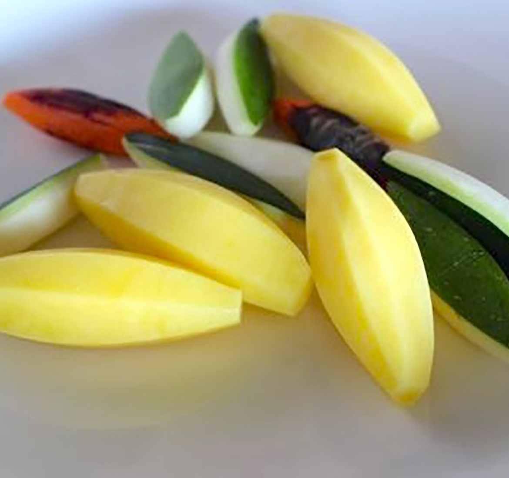
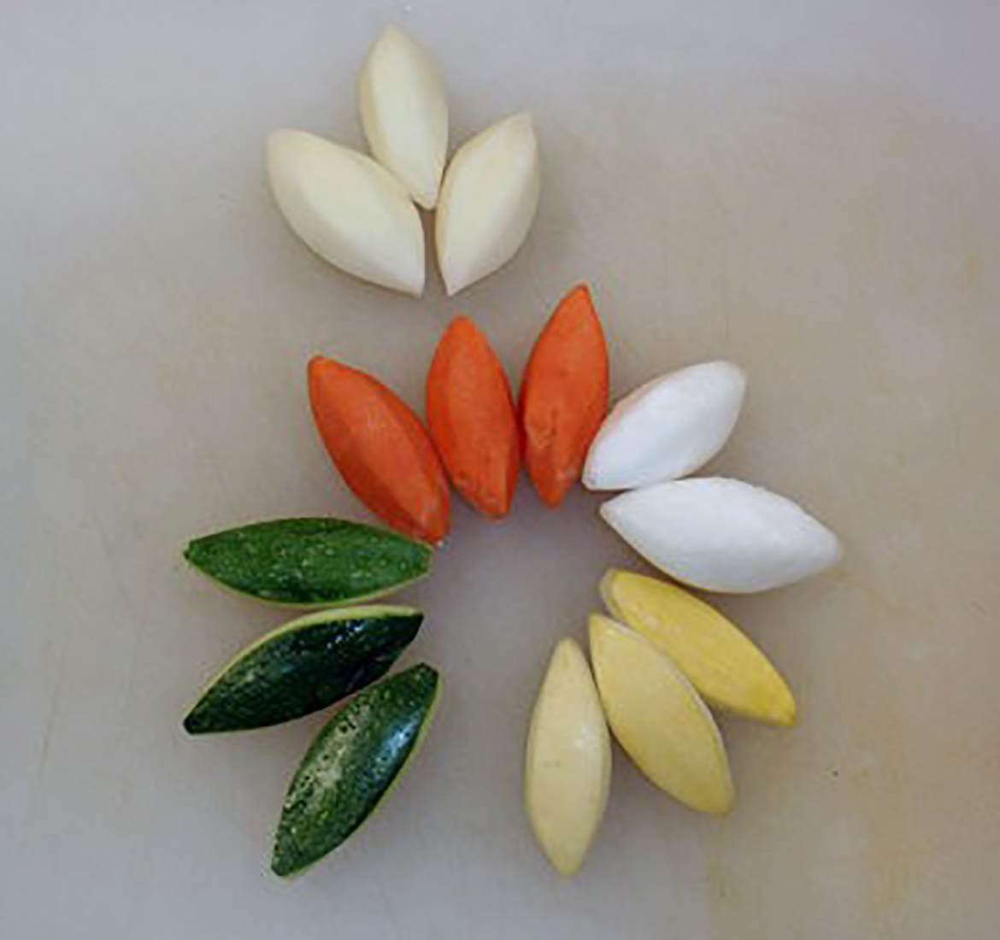
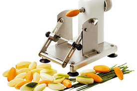
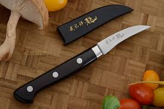

<div class="container">
  <div class="row" style="padding-top:5%">
    <div class="col-md-5">

      <div class="owl-carousel owl-theme" data-plugin-options="{'items': 1, 'margin': 10, 'animateOut': 'fadeOut', 'autoplay': false, 'autoplayTimeout': 3000}">
        <div>
          <span class="img-thumbnail">
            
          </span>
        </div>
        <div>
          <span class="img-thumbnail">
            
          </span>
        </div>
      </div>

    </div>
    <!-- Tournée (pronounced tour-nay) is French for the word "turned." The term refers to a method of cutting and peeling root -->
    <!-- vegetables into oblong, seven-sided football-like shapes. -->
    <!-- 2 inches long × 3⁄4 inches in diameter, with 7 sides, and flat-ended (5 cm × 2 cm). -->
    <div class="col-md-7">
      <h2 class="mt-sm h2">{{item.title}}</h2>
      <p class="">{{item.Description}}
      </p>
      <ul class="portfolio-details">
        <li>
          <h4 class="mt-sm mb-xs">Size</h4>
          <p>{{item.size}}
          </p>
        </li>
        <li>
          <h4 class="mt-sm mb-xs ">Tools</h4>
          <div class="col-md-4  pl-xs ">
            <a href="portfolio-single-small-slider.html">
              <span class="thumb-info thumb-info-centered-info thumb-info-no-borders">
                <span class="thumb-info-wrapper">
                  
                  <span class="thumb-info-title">
                    <span class="thumb-info-inner">Knife</span>
                    <span class="thumb-info-type">Read More</span>
                  </span>
                </span>
              </span>
            </a>
          </div>
          <div class="col-md-4 pl-xs">
            <a href="portfolio-single-small-slider.html">
              <span class="thumb-info thumb-info-centered-info thumb-info-no-borders">
                <span class="thumb-info-wrapper">
                  
                  <span class="thumb-info-title">
                    <span class="thumb-info-inner">Equipment</span>
                    <span class="thumb-info-type">Read More</span>
                  </span>
                </span>
              </span>
            </a>
          </div>
        </li>
      </ul>
    </div>
  </div>

  <!-- <div class="row">
    <div class="col-md-12">
      <hr class="tall">
      <h3>
        <strong>Most Recipes</strong>
      </h3>
    </div>
  </div> -->
</div>